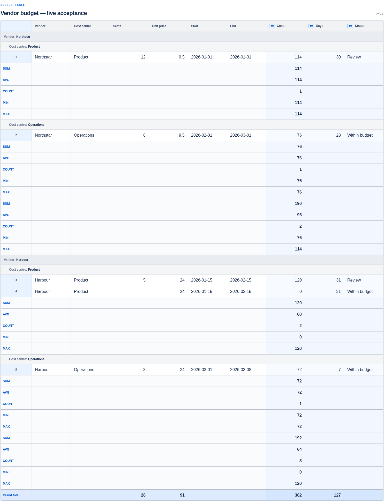

Type or import CSV
Start in the editor or replace rows from a UTF-8 CSV after reviewing compatibility.
A working report inside the page
Rollup adds formulas, nested grouping, subtotals, and grand totals to a Confluence macro. Authors configure the report once; readers see the same calculated result.
Capabilities
Report data and configuration stay with the macro. Calculations run in the signed-in reader’s browser, so the published result follows the saved source rather than a separate spreadsheet.
Start in the editor or replace rows from a UTF-8 CSV after reviewing compatibility.
Use arithmetic, comparisons, strict calendar dates, and lazy IF expressions with clear errors.
Choose ordered grouping levels that match the way readers scan the result.
Add SUM, AVG, COUNT, MIN, or MAX at group levels and see numeric grand totals once.
Editor and reader share the same calculation and error behavior.
Rollup has no vendor-operated application backend, database, analytics, or telemetry in this release candidate.
Dated development evidence
On 19 September 2026, the development installation saved, published, and reloaded this synthetic five-row vendor report. Its two grouping levels, three formulas, five summary operations, and grand totals survived the round trip.
A separate 5,000-row synthetic fixture was also saved, published, and reloaded in development with its exact CSV rows, 3 formulas, 2 grouping levels, and 5 summaries preserved. This is a tested example, not a universal capacity guarantee. See the documented limits.

Availability
Planned offer: one paid edition targeting US$0.90 per user per month, with 1–10 users intended to be free and a 30-day Marketplace trial intended.
These terms and prices have not been configured or verified in Atlassian Marketplace. A listing URL and public availability will appear here only after Marketplace approval.